مقدمة في الإشعاعIntroduction
نظري · م01 · 6.6 دقيقةأقسام المحاضرة (6)
- مقدمة والإشعاع الكهرومغناطيسيIntroduction & Electromagnetic Radiation
- خصائص الإشعاع الكهرومغناطيسيElectromagnetic Radiation Characteristics
- الطيف الكهرومغناطيسيElectromagnetic Spectrum
- أنواع الإشعاع: المؤيِّن وغير المؤيِّنTypes of Radiation
- التحلّل الإشعاعي وأنواعهRadioactive Decay
- اكتشاف الأشعة السينيةX-ray
مقدمة والإشعاع الكهرومغناطيسيIntroduction & Electromagnetic Radiation
1. مقدمة1. Introduction
Radiation is energy that moves from one place to another in a form that can be described as waves or particles. radiation has lower risk at lower doses but can be associated with higher risks at higher doses. Understanding radiation requires basic knowledge of atomic structure, energy and how radiation may damage cells in the human body.
الإشعاع طاقة تنتقل من مكان إلى آخر بشكل يمكن وصفه على هيئة موجات أو جسيمات. خطورة الإشعاع أقل عند الجرعات المنخفضة، لكنه قد يرتبط بمخاطر أعلى عند الجرعات العالية. ويتطلّب فهم الإشعاع معرفة أساسية بتركيب الذرّة والطاقة وكيف يمكن للإشعاع أن يُتلف خلايا جسم الإنسان.
2- الإشعاع الكهرومغناطيسي2- Electromagnetic Radiation
Electromagnetic energy refers to all energy that moves with the velocity of light in a harmonic wave pattern.
الطاقة الكهرومغناطيسية هي كل طاقة تنتقل بسرعة الضوء على شكل موجة توافقية.
- • Nature: It has a dual nature, behaving as both waves and particles called photons.الطبيعة: له طبيعة مزدوجة، فيسلك سلوك الموجات وسلوك الجسيمات التي تُسمّى الفوتونات.
- • Travel: EM radiation does not require a medium to travel and can move through a vacuum.الانتقال: الإشعاع الكهرومغناطيسي لا يحتاج إلى وسط لينتقل، ويمكنه الانتقال عبر الفراغ.
- • Speed: All electromagnetic waves travel at the same speed in a vacuum, known as the speed of light.السرعة: كل الموجات الكهرومغناطيسية تنتقل بالسرعة نفسها في الفراغ، وتُعرف بسرعة الضوء.
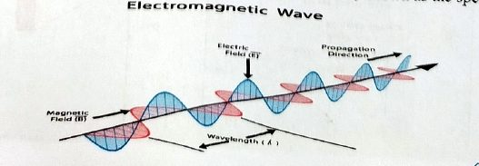
خصائص الإشعاع الكهرومغناطيسيElectromagnetic Radiation Characteristics
3- خصائص الإشعاع الكهرومغناطيسي3-Electromagnetic Radiation Characteristics
1- السعة1- Amplitude (A)
Amplitude is the distance from the maximum vertical displacement of the wave to the middle of the wave. This measures the magnitude of oscillation of a particular wave. Larger amplitude means higher energy and lower amplitude means lower energy. Amplitude is important because it tells you the intensity or brightness of a wave in comparison with other waves.
السعة هي المسافة من أقصى إزاحة عمودية للموجة إلى منتصف الموجة، وهي تقيس مقدار تذبذب موجة معيّنة. السعة الأكبر تعني طاقة أعلى، والسعة الأقل تعني طاقة أقل. وأهمية السعة أنها تخبرك بشدّة الموجة أو سطوعها مقارنةً بالموجات الأخرى.
2- الطول الموجي2-Wavelength (λ)
Wavelength (λ) is the distance of one full cycle of the oscillation. Shorter wavelength means greater frequency, and greater frequency means higher energy. Wavelengths are important in that they tell one what type of wave one is dealing with.
الطول الموجي (λ) هو مسافة دورة كاملة واحدة من التذبذب. الطول الموجي الأقصر يعني تردداً أكبر، والتردد الأكبر يعني طاقة أعلى. وأهمية الأطوال الموجية أنها تخبرنا بنوع الموجة التي نتعامل معها.
3- الزمن الدوري3- Period
Period (T) is the amount of time a wave takes to travel one wavelength; it is measured in seconds (s).
الزمن الدوري (T) هو الوقت الذي تستغرقه الموجة لتقطع طولاً موجياً واحداً، ويُقاس بالثانية (s).
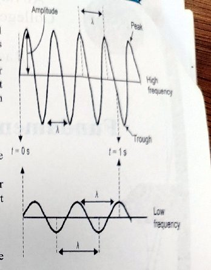
الطيف الكهرومغناطيسيElectromagnetic Spectrum
4- الطيف الكهرومغناطيسي4- Electromagnetic Spectrum
- 1. Radio wavesموجات الراديو.
- 2. Microwaves, like in a microwave ovenالموجات الدقيقة (المايكروويف)، مثل التي في فرن المايكروويف.
- 3. Heat (infrared radiation)الحرارة (الأشعة تحت الحمراء).
- 4. Lightالضوء.
- 5. Ultraviolet Light.الأشعة فوق البنفسجية.
- 6. X-rays (emitted by X-ray tubes)الأشعة السينية (تنبعث من أنابيب الأشعة السينية).
- 7. Gamma Raysأشعة غاما.
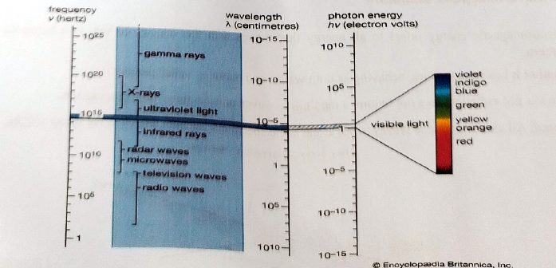
أنواع الإشعاع: المؤيِّن وغير المؤيِّنTypes of Radiation
5- أنواع الإشعاع5-Types of Radiation
Not all radiation interacts with matter in the same way. There are two forms of radiation:
لا يتفاعل كل الإشعاع مع المادة بالطريقة نفسها. هناك شكلان للإشعاع:
In high doses, ionizing radiation can damage cells or organs in our bodies or even cause death. In the correct uses and doses and with the necessary protective measures, this kind of radiation has many beneficial uses, such as in energy production, in industry, in research and in medical diagnostics and treatment of various diseases, such as cancer.
في الجرعات العالية، يمكن للإشعاع المؤيِّن أن يُتلف الخلايا أو الأعضاء في أجسامنا أو حتى يسبّب الوفاة. ومع الاستخدام والجرعات الصحيحة وإجراءات الحماية اللازمة، لهذا النوع من الإشعاع استخدامات مفيدة كثيرة، مثل إنتاج الطاقة والصناعة والبحث العلمي والتشخيص الطبي وعلاج أمراض مختلفة مثل السرطان.
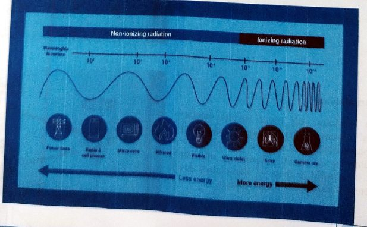
التحلّل الإشعاعي وأنواعهRadioactive Decay
6- التحلّل الإشعاعي6- Radioactive Decay
Ionizing radiation can originate from, for example, unstable (radioactive) atoms as they are transitioning into a more stable state while releasing energy.
يمكن أن ينشأ الإشعاع المؤيِّن مثلاً من الذرّات غير المستقرّة (المشعّة) أثناء انتقالها إلى حالة أكثر استقراراً مع إطلاق طاقة.
Most atoms on Earth are stable. However, in some types of unstable atoms, the composition of the number of protons and neutrons in their nucleus does not allow them to hold those particles together. Such unstable atoms are called “radioactive atoms”. When radioactive atoms decay, they release energy in the form of ionizing radiation.
معظم الذرّات على الأرض مستقرّة. لكن في بعض أنواع الذرّات غير المستقرّة، لا يسمح تركيب عدد البروتونات والنيوترونات في نواتها بتماسك هذه الجسيمات معاً. هذه الذرّات غير المستقرّة تُسمّى «الذرّات المشعّة». وعندما تتحلّل الذرّات المشعّة، تُطلق طاقة على شكل إشعاع مؤيِّن.
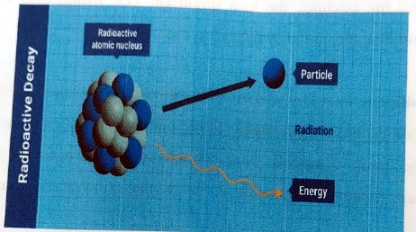
1- جسيم ألفا1- Alpha Particle
In alpha radiation, the decaying nuclei release heavy, positively charged particles in order to become more stable. These particles cannot penetrate our skin to cause harm and can often be stopped by using even a single sheet of paper.
في إشعاع ألفا، تُطلق النوى المتحلّلة جسيمات ثقيلة موجبة الشحنة لتصبح أكثر استقراراً. هذه الجسيمات لا تستطيع اختراق جلدنا لتسبّب الضرر، وغالباً يمكن إيقافها حتى بورقة واحدة.
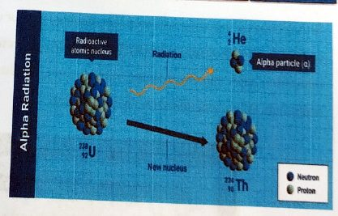
2- إشعاع بيتا2- Beta radiation
In beta radiation, the nuclei release smaller particles (electrons) that are more penetrating than alpha particles and can pass through e.g., 1-2 centimeters of water, depending on their energy. In general, a sheet of aluminum a few millimeters thick can stop beta radiation.
في إشعاع بيتا، تُطلق النوى جسيمات أصغر (إلكترونات) أكثر اختراقاً من جسيمات ألفا، ويمكنها مثلاً المرور عبر 1–2 سم من الماء حسب طاقتها. وبشكل عام، يمكن لصفيحة ألمنيوم بسُمك بضعة مليمترات أن توقف إشعاع بيتا.
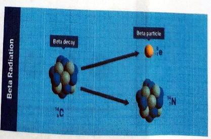
أشعة غاماGamma rays
Gamma rays, which have various applications, such as cancer treatment, are electromagnetic radiation, similar to X-rays. Some gamma rays pass right through the human body without causing harm, while others are absorbed by the body and may cause damage. The intensity of gamma rays can be reduced to levels that pose less risk by thick walls of concrete or lead.
أشعة غاما، التي لها تطبيقات متنوّعة مثل علاج السرطان، هي إشعاع كهرومغناطيسي مشابه للأشعة السينية. بعض أشعة غاما تمرّ مباشرةً عبر جسم الإنسان دون أن تسبّب ضرراً، وبعضها يمتصّه الجسم وقد يسبّب ضرراً. ويمكن خفض شدّة أشعة غاما إلى مستويات أقل خطورة بجدران سميكة من الخرسانة أو الرصاص.
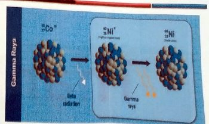
4- النيوترونات4- Neutron
Neutron particles are produced in nuclear reactions including fission and fusion. Because they carry no charge, they easily penetrate many substances. Large quantities of dense lead or cement are required to shield against neutron radiation.
جسيمات النيوترون تُنتَج في التفاعلات النووية ومنها الانشطار والاندماج. ولأنها لا تحمل شحنة، فهي تخترق كثيراً من المواد بسهولة. ويلزم كميات كبيرة من الرصاص الكثيف أو الإسمنت للحماية من إشعاع النيوترونات.
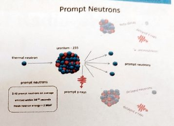
اكتشاف الأشعة السينيةX-ray
7- الأشعة السينية7-X-ray
In November 1895, German physicist Wilhelm Conrad Rontgen was experimenting with cathode ray tubes when he observed a glow on a nearby screen coated with barium platinocyanide—even though the tube was shielded with black cardboard. He conclude that an unknown type of radiation was passing through the material, which he named “X-rays”, with “X” signifying the unknown. The first radiograph that demonstrates the bones of the hand of Roentgen's wife, Anna Bertha, with a ring on one finger.
في تشرين الثاني 1895، كان الفيزيائي الألماني فيلهلم كونراد رونتغن يُجري تجارب على أنابيب أشعة الكاثود عندما لاحظ توهّجاً على شاشة قريبة مطليّة بمادة بلاتينوسيانيد الباريوم، رغم أن الأنبوب كان مغطّى بورق مقوّى أسود. فاستنتج أن نوعاً مجهولاً من الإشعاع كان يمرّ عبر المادة، وسمّاه «الأشعة السينية»، حيث يدلّ حرف «X» على المجهول. وأول صورة شعاعية تُظهر عظام يد زوجة رونتغن، آنا بيرثا، وفي أحد أصابعها خاتم.
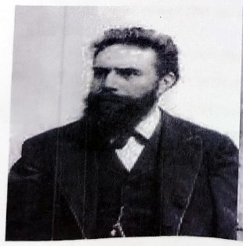
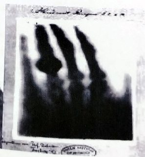
المحاضرة مسموعة
نص الأستاذ بالإنكليزي مثل الأصل · 6.6 دقيقة. اضغط أي جملة تسمعها، أو مصطلح منقّط تسمع لفظه ومعناه.
Introduction & Electromagnetic Radiationمقدمة والإشعاع الكهرومغناطيسي
Introduction & Electromagnetic Radiation
1. Introduction
Radiation is energy that moves from one place to another in a form that can be described as waves or particles. radiation has lower risk at lower doses but can be associated with higher risks at higher doses. Understanding radiation requires basic knowledge of atomic structure, energy and how radiation may damage cells in the human body.
2- Electromagnetic Radiation
Electromagnetic energy refers to all energy that moves with the velocity of light in a harmonic wave pattern.
Nature: It has a dual nature, behaving as both waves and particles called photons.
Travel: EM radiation does not require a medium to travel and can move through a vacuum.
Speed: All electromagnetic waves travel at the same speed in a vacuum, known as the speed of light.
Electromagnetic Radiation Characteristicsخصائص الإشعاع الكهرومغناطيسي
Electromagnetic Radiation Characteristics
3-Electromagnetic Radiation Characteristics
1- Amplitude (A)
Amplitude is the distance from the maximum vertical displacement of the wave to the middle of the wave. This measures the magnitude of oscillation of a particular wave. Larger amplitude means higher energy and lower amplitude means lower energy. Amplitude is important because it tells you the intensity or brightness of a wave in comparison with other waves.
2-Wavelength (λ)
Wavelength (λ) is the distance of one full cycle of the oscillation. Shorter wavelength means greater frequency, and greater frequency means higher energy. Wavelengths are important in that they tell one what type of wave one is dealing with.
3- Period
Period (T) is the amount of time a wave takes to travel one wavelength; it is measured in seconds (s).
Electromagnetic Spectrumالطيف الكهرومغناطيسي
Electromagnetic Spectrum
4- Electromagnetic Spectrum
Radio waves
Microwaves, like in a microwave oven
Heat (infrared radiation)
Light
Ultraviolet Light.
X-rays (emitted by X-ray tubes)
Gamma Rays
Types of Radiationأنواع الإشعاع: المؤيِّن وغير المؤيِّن
Types of Radiation
5-Types of Radiation
Not all radiation interacts with matter in the same way. There are two forms of radiation:
Is lower energy radiation that is not energetic enough to detach electrons from atoms or molecules, whether in matter or living organisms. However, its energy can make those molecules vibrate and so produce heat. For most people, non-ionizing radiation does not pose a risk to their health. However, workers that are in regular contact with some sources of non-ionizing radiation may need special measures to protect themselves from, for example, the heat produced. The visible light is a type of non-ionizing radiation that the human eye can perceive.
Is a type of radiation of such energy that it can detach electrons from atoms or molecules, which causes changes at the atomic level when interacting with matter including living organisms. Such changes usually involve the production of ions (electrically charged atoms or molecules) – hence the term “ionizing” radiation.
In high doses, ionizing radiation can damage cells or organs in our bodies or even cause death. In the correct uses and doses and with the necessary protective measures, this kind of radiation has many beneficial uses, such as in energy production, in industry, in research and in medical diagnostics and treatment of various diseases, such as cancer.
Radioactive Decayالتحلّل الإشعاعي وأنواعه
Radioactive Decay
6- Radioactive Decay
Ionizing radiation can originate from, for example, unstable (radioactive) atoms as they are transitioning into a more stable state while releasing energy.
Most atoms on Earth are stable. However, in some types of unstable atoms, the composition of the number of protons and neutrons in their nucleus does not allow them to hold those particles together. Such unstable atoms are called “radioactive atoms”. When radioactive atoms decay, they release energy in the form of ionizing radiation.
1- Alpha Particle
In alpha radiation, the decaying nuclei release heavy, positively charged particles in order to become more stable. These particles cannot penetrate our skin to cause harm and can often be stopped by using even a single sheet of paper.
2- Beta radiation
In beta radiation, the nuclei release smaller particles (electrons) that are more penetrating than alpha particles and can pass through e.g., 1-2 centimeters of water, depending on their energy. In general, a sheet of aluminum a few millimeters thick can stop beta radiation.
Gamma rays
Gamma rays, which have various applications, such as cancer treatment, are electromagnetic radiation, similar to X-rays. Some gamma rays pass right through the human body without causing harm, while others are absorbed by the body and may cause damage. The intensity of gamma rays can be reduced to levels that pose less risk by thick walls of concrete or lead.
4- Neutron
Neutron particles are produced in nuclear reactions including fission and fusion. Because they carry no charge, they easily penetrate many substances. Large quantities of dense lead or cement are required to shield against neutron radiation.
X-rayاكتشاف الأشعة السينية
X-ray
7-X-ray
In November 1895, German physicist Wilhelm Conrad Rontgen was experimenting with cathode ray tubes when he observed a glow on a nearby screen coated with barium platinocyanide—even though the tube was shielded with black cardboard. He conclude that an unknown type of radiation was passing through the material, which he named “X-rays”, with “X” signifying the unknown. The first radiograph that demonstrates the bones of the hand of Roentgen's wife, Anna Bertha, with a ring on one finger.
كل أسئلة المحاضرة: السؤال إنكليزي وتحته عربي، وكل خيار بلغتين، والجواب الصحيح معلّم ويّاه «ليش صح» · 0.2 MB
قراءة الأسئلة تحميلاضغط أي مصطلح منقّط تسمع لفظه ومعناه.